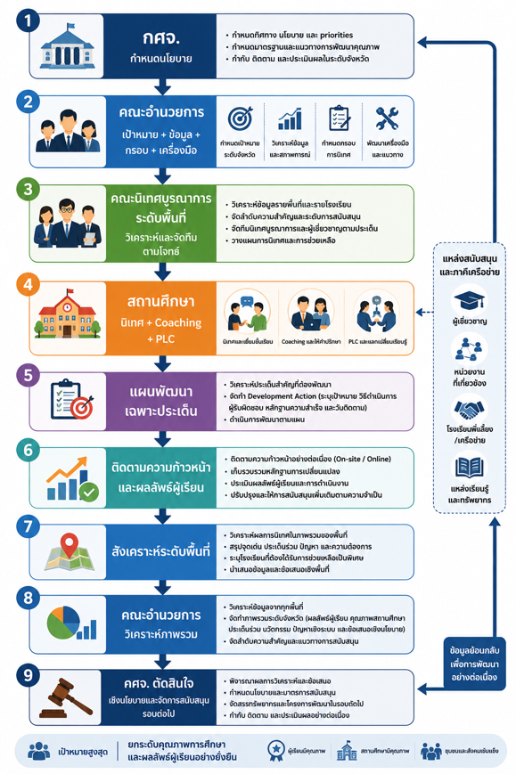
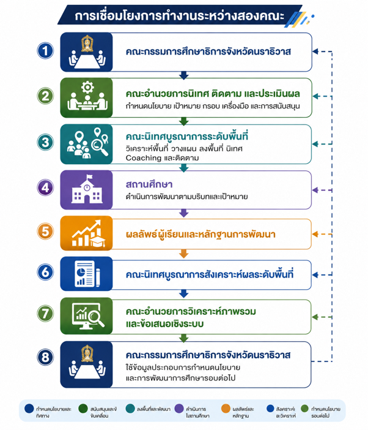

จังหวัดนราธิวาส มุ่งเน้นการเชื่อมโยงการดำเนินงานอย่างเป็นระบบ ใช้ข้อมูลและหลักฐานเชิงประจักษ์ ยกระดับคุณภาพผู้เรียนและพัฒนาสถานศึกษาตามบริบทจริง
เชื่อมโยงการดำเนินงานระดับจังหวัด หน่วยงาน พื้นที่ และสถานศึกษา ให้มีทิศทางสัมพันธ์กัน ภายใต้เป้าหมายคุณภาพผู้เรียนร่วมกัน
ใช้ข้อมูลสารสนเทศและหลักฐานเชิงประจักษ์ วิเคราะห์สภาพปัจจุบัน ปัญหา ความต้องการจำเป็น เพื่อการตัดสินใจและพัฒนาอย่างตรงจุด
หนุนเสริมความสามารถของโรงเรียนผ่านการชี้แนะ เป็นพี่เลี้ยง ให้คำปรึกษา และการสะท้อนผลผ่านชุมชนการเรียนรู้ทางวิชาชีพ
ประสานความร่วมมือระหว่างต้นสังกัด สถาบันอุดมศึกษา อปท. ภาคเอกชน ประชาสังคม และเครือข่าย เพื่อระดมทรัพยากรและความเชี่ยวชาญ
ดำเนินงานอย่างเป็นวงจรต่อเนื่อง ตั้งแต่การเก็บข้อมูล วางแผน นิเทศ Coaching ติดตาม ประเมิน และสังเคราะห์ผลเข้าสู่นโยบาย
ผลการนิเทศจะถูกสังเคราะห์เป็นสารสนเทศเชิงระบบ เพื่อเสนอต่อคณะกรรมการศึกษาธิการจังหวัดนราธิวาส ในการกำหนดมาตรการและทรัพยากร
ได้รับการนิเทศ ติดตาม และสนับสนุนตามบริบทความต้องการจำเป็น มีแผนพัฒนาที่ชัดเจน และสามารถแสดงหลักฐานการเปลี่ยนแปลงหลังได้รับการนิเทศ
เกิดเครือข่ายการนิเทศแบบบูรณาการที่สามารถใช้ข้อมูลร่วมกัน ประสานทรัพยากร ลดความซ้ำซ้อน และร่วมแก้ไขปัญหาคุณภาพการศึกษาในพื้นที่
มีระบบข้อมูลคุณภาพการศึกษาภาพรวมที่สะท้อนสภาพจริง ระบุประเด็นและกลุ่มเป้าหมายที่ต้องช่วยเหลือเพื่อใช้เป็นฐานนโยบายของ กศจ. นราธิวาส
หลักสำคัญ: กรอบ 6 ด้านเป็น "กรอบสแกนภาพรวม" ส่วนการลงพื้นที่จริงให้เลือก 1–3 ประเด็นสำคัญตามข้อมูลของแต่ละสถานศึกษา
ความรู้ ทักษะ สมรรถนะ คุณลักษณะ การอ่าน การเขียน การคิด ผลสัมฤทธิ์ ความก้าวหน้า และกลุ่มผู้เรียนที่ต้องได้รับการช่วยเหลือเฉพาะด้าน
ความสอดคล้องกับบริบทพื้นที่ ผลลัพธ์การเรียนรู้ โครงสร้างหลักสูตร หน่วยการเรียนรู้ และกระบวนการนำหลักสูตรไปใช้ในชั้นเรียนจริง
การจัดกิจกรรม Active Learning การเรียนรู้ฐานสมรรถนะ การใช้สถานการณ์จริง การใช้สื่อ เทคโนโลยี และแหล่งเรียนรู้ที่หลากหลาย
ความสอดคล้องระหว่างผลลัพธ์ ภาระงาน เครื่องมือประเมิน เกณฑ์การประเมิน และการใช้ผลสะท้อนกลับเพื่อพัฒนาผู้เรียน
การกำหนดเป้าหมาย ระบบข้อมูลสารสนเทศ แผนพัฒนา กระบวนการ PLC นิเทศภายใน รายงาน SAR และการใช้ผลเพื่อพัฒนาโรงเรียน
เด็กกลุ่มเสี่ยง เด็กหลุดระบบ ความปลอดภัย ระบบดูแลช่วยเหลือ ความแตกต่างระหว่างบุคคล ภาษา วัฒนธรรม และความต้องการพิเศษ
ลักษณะ: มีระบบพัฒนาตนเองเข้มแข็ง ดำเนินการบรรลุมาตรฐาน
• นิเทศตามวงรอบปกติ (3 รอบ)
• ถอดบทเรียนแลกเปลี่ยนเรียนรู้
• ขยายผลแนวปฏิบัติที่ดี (Best Practice)
ลักษณะ: ภาพรวมดี แต่มีบางจุดที่ต้องยกระดับเร่งด่วน
• นิเทศเจาะจงเฉพาะประเด็น
• จัดกระบวนการ Coaching เติมเต็ม
• ติดตามเพิ่ม 2–3 รอบระหว่างวงรอบ
ลักษณะ: ต้องการการช่วยเหลือใกล้ชิดรอบด้าน
• จัดทีมเฉพาะกิจ / โรงเรียนพี่เลี้ยง
• ร่วมวางแผนพัฒนา Development Action
• ลงพื้นที่และติดตามใกล้ชิดต่อเนื่อง
รวบรวมและวิเคราะห์ข้อมูลคุณภาพการศึกษาจากทุกแหล่ง เช่น ผลสัมฤทธิ์ สมรรถนะ SAR เด็กกลุ่มเสี่ยง ข้อมูลบริบทพื้นที่ เพื่อจัดทำฐานข้อมูลกลาง
ศึกษารายละเอียด School Profile จัดทีมงาน ชี้แจงเป้าหมาย กำหนดตารางและผู้รับผิดชอบอย่างชัดเจนก่อนลงพื้นที่
สนทนากับผู้บริหาร/ครู สังเกตการณ์สอน สัมภาษณ์นักเรียน ตรวจสอบหลักฐานเชิงประจักษ์ เพื่อสังเคราะห์จุดแข็งและจุดที่ต้องยกระดับพัฒนา
จัดทำแผนพัฒนาเฉพาะประเด็น (Development Action Plan) ร่วมกับโรงเรียน สนับสนุน Coaching, PLC, Lesson Study และโรงเรียนพี่เลี้ยง
ติดตามพัฒนาการจากหลักฐานการปฏิบัติงานจริง (ผลงานนักเรียน, บันทึกการสอน, ร่องรอยพัฒนาการ) ทั้งแบบออนไลน์และลงพื้นที่เฉพาะกรณีจำเป็น
สังเคราะห์ภาพรวมผลการนิเทศรายพื้นที่ แยกแยะปัญหาระดับโรงเรียน/พื้นที่/ระบบ เพื่อเสนอแนวทางพัฒนาและมาตรการเชิงนโยบายต่อ กศจ. นราธิวาส
ปฏิทินปฏิบัติการนิเทศ ติดตาม และประเมินผล ภาคเรียนที่ 2 ปีการศึกษา 2569
• วันอังคาร – วันพฤหัสบดี: เป็นช่วงหลักสำหรับการลงพื้นที่นิเทศโรงเรียน
• วันจันทร์: เตรียมข้อมูล ทบทวนแผน และประชุมเตรียมความพร้อมทีมงาน
• วันศุกร์: ถอดบทเรียน สะท้อนผล บันทึกข้อมูลเข้าสู่ระบบ และจัดทำข้อเสนอแนะ
| ช่วงเวลา | วงรอบ / กิจกรรม | แนวทางดำเนินงาน | ผู้รับผิดชอบหลัก | ผลที่คาดว่าจะได้รับ |
|---|---|---|---|---|
| 2–6 พ.ย. 69 | เตรียมการระดับจังหวัด | วิเคราะห์ข้อมูลจังหวัด กำหนดเป้าหมายและประเด็น ทบทวนเครื่องมือ | คณะอำนวยการ / ฝ่ายวิชาการ | กรอบเป้าหมาย & ข้อมูลพื้นฐาน |
| 9–13 พ.ย. 69 | เตรียมความพร้อมทีมนิเทศ | ประชุมชี้แจงแนวทาง จัดทำ School Profile วางแผนตารางลงพื้นที่ | ทีมนิเทศบูรณาการ | แผนนิเทศรายพื้นที่ & ปฏิทินลงพื้นที่ |
| 16–27 พ.ย. 69 | นิเทศรอบที่ 1 Baseline | ศึกษาสภาพจริง สนทนาผู้บริหาร/ครู สังเกตการเรียนรู้ ตรวจสอบหลักฐาน | ทีมนิเทศระดับพื้นที่ | ทราบจุดแข็ง ปัญหา และความต้องการจำเป็น |
| 30 พ.ย.–11 ธ.ค. 69 | สะท้อนผล & จัดทำแผน | วิเคราะห์ข้อค้นพบ จัดทำแผนพัฒนาเฉพาะประเด็น (Development Action) | ทีมนิเทศ / สถานศึกษา | แผนพัฒนาเฉพาะประเด็นโรงเรียน |
| 14–25 ธ.ค. 69 | Coaching & หนุนเสริม 1 | Coaching, PLC, ผู้เชี่ยวชาญ, โรงเรียนพี่เลี้ยง เติมเต็มตามประเด็น | ทีมพื้นที่ / ผู้เชี่ยวชาญ | เกิดการพัฒนาและร่องรอยความก้าวหน้า |
| 11–29 ม.ค. 70 | นิเทศรอบที่ 2 ส่งเสริมการพัฒนา | ติดตามความก้าวหน้า Coaching เฉพาะประเด็น หนุนเสริมต่อเนื่อง | ทีมนิเทศระดับพื้นที่ | ทราบพัฒนาการและปรับแก้ไขข้ออุปสรรค |
| 1–12 ก.พ. 70 | นิเทศรอบที่ 3 ประเมินผลลัพธ์ | ประเมินการเปลี่ยนแปลงเปรียบเทียบ Baseline ตรวจสอบหลักฐานการพัฒนา | ทีมนิเทศระดับพื้นที่ | ข้อมูลผลการเปลี่ยนแปลง & ข้อเสนอแนะ |
| 15–26 ก.พ. 70 | ติดตามสถานศึกษาเข้มข้น | Coaching รายกรณี สำหรับโรงเรียนที่ต้องการการสนับสนุนเฉพาะ/เข้มข้น | ทีมพี่เลี้ยง / เครือข่าย | โรงเรียนได้รับการช่วยเหลือตรงจุด |
| 1–19 มี.ค. 70 | สังเคราะห์ผลระดับพื้นที่ | วิเคราะห์ข้อมูล 3 รอบ สรุปผลสัมฤทธิ์ คุณภาพโรงเรียน ปัญหา และนวัตกรรม | หัวหน้าทีม / เลขานุการทีม | รายงานสรุปผลนิเทศระดับพื้นที่ |
| 22–31 มี.ค. 70 | สังเคราะห์ระดับจังหวัด เสนอ กศจ. | จัดทำภาพรวมจังหวัด ข้อค้นพบ นวัตกรรม และข้อเสนอเชิงนโยบายยื่น กศจ. | คณะอำนวยการ / ฝ่ายวิชาการ | รายงานระดับจังหวัด & ข้อเสนอนโยบาย กศจ. |
แสดงแผนผังการขับเคลื่อนงานนิเทศยกระดับคุณภาพการศึกษาจังหวัดนราธิวาส
ผังแสดงขั้นตอนการดำเนินงานตั้งแต่ระดับนโยบายสู่สถานศึกษาและย้อนกลับเข้าสู่ กศจ.

การประสานพลังระหว่างคณะกรรมการศึกษาธิการจังหวัด (กศจ.) และคณะอำนวยการนิเทศ
